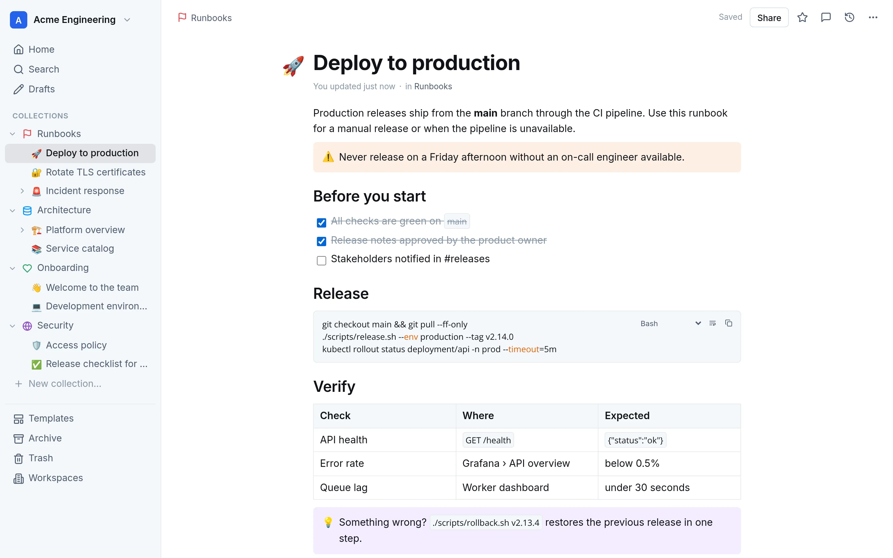
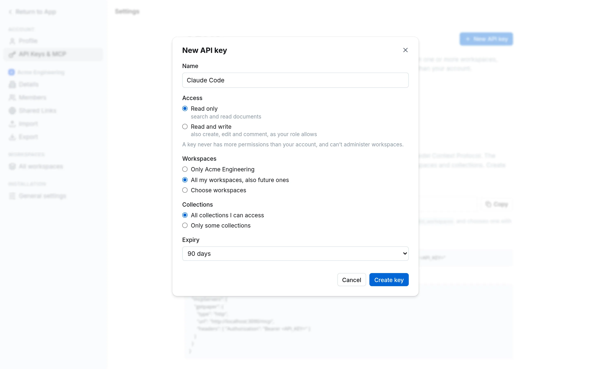
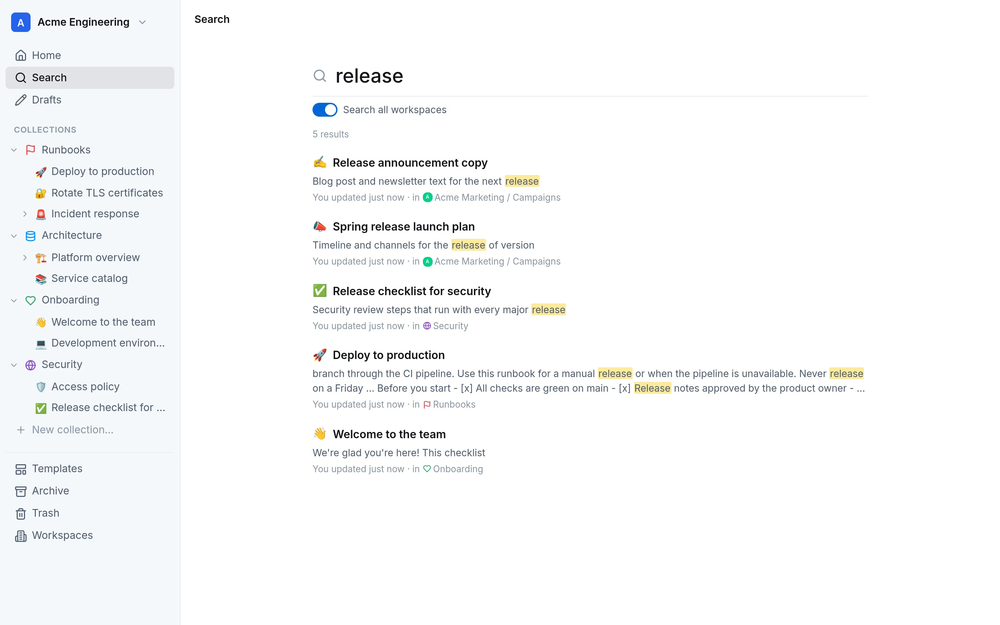
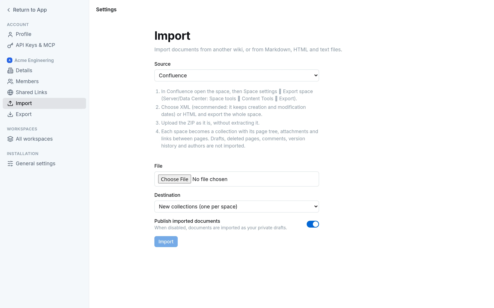
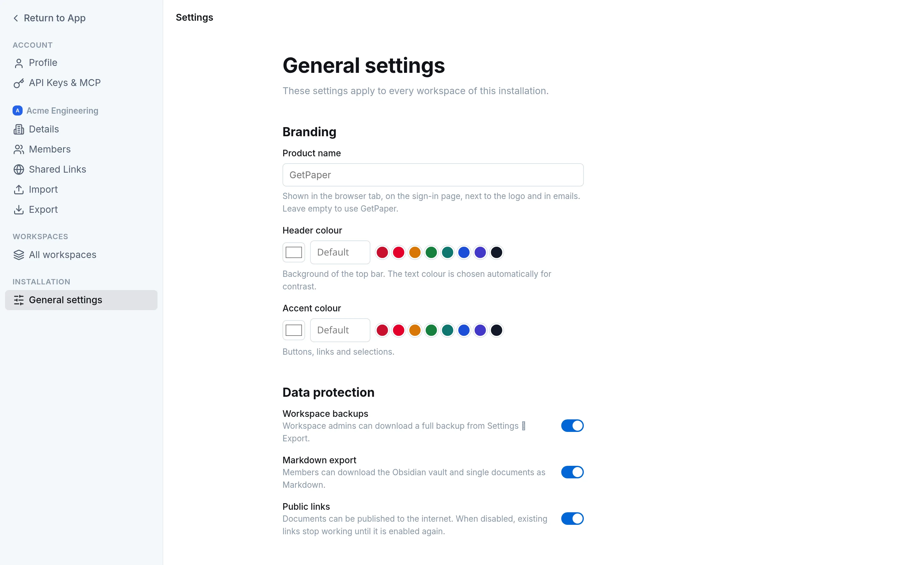

GetPaper is a fast, self-hosted wiki for teams: a delightful Markdown editor, multiple workspaces, Microsoft sign-in and a built-in MCP server so your AI assistant can read and write your documentation.

A focused editor and a clean structure keep documentation alive - and the details that make admins happy are already there.
Slash commands, tables, checklists, callouts and code blocks with syntax highlighting, copy and line wrapping. Saved as plain Markdown.
Fully isolated workspaces with their own members, roles and collections. Move pages between them in a click.
Full-text search with highlighted results, filters by collection and one switch to search every workspace you belong to.
Microsoft Entra ID single sign-on, invite-only access and beautiful invitation emails. Admins, editors and viewers.
Private collections, scoped API keys and superadmin switches to turn off exports and public links installation-wide.
Your product name, header and accent colours, light or dark theme, English or Italian - per user, with installation defaults.
GetPaper ships a Model Context Protocol server. Connect Claude, Cursor or any MCP client and let it search, read and write documentation - always within the limits you choose.
# one command, and your assistant knows your wiki claude mcp add --transport http getpaper \ https://docs.acme.example/mcp \ --header "Authorization: Bearer ol_api_…"

Engineering runbooks, marketing plans, HR policies: search everything you have access to and jump straight into the right workspace.

Import Confluence spaces (XML or HTML exports) with page tree, dates, attachments and macros. Outline, Notion, Obsidian and plain Markdown work too.

Superadmins brand the product, decide which exports are allowed and set the defaults every new user starts with.

A single Docker Compose file starts GetPaper and PostgreSQL from the image on GitHub Container Registry. No external services required.
The Compose file uses the published image (amd64 and arm64): no build needed.
curl -fsSLO https://raw.githubusercontent.com/teopost/getpaper/main/deploy/docker-compose.yml
Set your public URL and a database password; Microsoft sign-in and email are optional.
curl -fsSL https://raw.githubusercontent.com/teopost/getpaper/main/.env.example -o .env nano .env
Open the URL and create the first account and workspace.
docker compose up -d
GetPaper is free and open source. Host it yourself, make it yours.